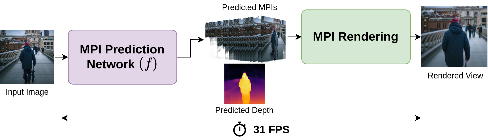

We present a real-time multiplane image (MPI) network. Unlike existing MPI based approaches that often rely on a separate depth estimation network to guide the network for estimating MPI parameters, our method directly predicts these parameters from a single RGB image. To guide the network we present a multimodal training strategy utilizing joint supervision from view synthesis and depth estimation losses. More details can be found in the paper.
The visual comparison against SinMPI, TMPI, and AdaMPI.
We compare the FPS rate on different resolutions against other methods when rendering end-to-end.
Note: When rendering from predicted MPIs, the rendering speed will be same for all methods.
@inproceedings{gond2025rtmpi,
title={Real-Time View Synthesis with Multiplane Image Network using Multimodal Supervision},
author={Gond, Manu and Shamshirgarha, Mohammadreza and Zerman, Emin and Knorr, Sebastian and Sj{\"o}str{\"o}m, M{\aa}rten},
booktitle={2025 IEEE 27th International Workshop on Multimedia Signal Processing (MMSP)},
pages={},
year={2025},
organization={IEEE}
}